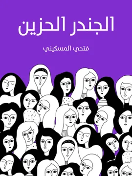

الجندر الحزين

قراءة عربية أصلية محددة النطاق في الصفحات 7، 8 من ملف PDF المرتبط، وليست تلخيصا كاملا للكتاب. نناقش ما تدعمه هذه المقاطع فقط.
الذات والنحو في أسئلة الجندر
يفتتح المسكيني كتابه بتوطئة «الذات والنحو: في أسئلة الجندر»: مقولة «الذكر» الحيوانية تبدو وكأنها الخلفية الأنطولوجية التي توجه كل استعاراتنا النحوية بوصفها، في أول أمرها، مجرد استعارات حيوانية تحولت مع الوقت، بعد موتها، إلى مصادر أنفسنا العميقة عبر أجهزة تأسيسية للمعنى في العالم، يمكن إحصاؤها في ثلاثية ليست كغيرها: الأب والملك والإله، كأن «النحو»، أي قواعد توزيع استعارات الذكورة والأنوثة على الموجودات بوصفها مصنوعات لغوية، هو الذي يؤسس بشكل غير مرئي كل مفاهيمنا عن الأبوّة والملك والألوهة. ومن ثم فإن كل نزاعاتنا واختلافاتنا وهوياتنا وعقولنا وانفعالاتنا، ثم مؤسساتنا وأجهزتنا التشريعية وأشكال حياتنا ودلالات موتنا، بل وأنماط صمتنا ومعاني سكوتنا، مشدودة إلى هذا التأسيس.
زاوية وحدود القراءة
قراءة في التوطئة الافتتاحية من الصفحتين 7 و8. أطروحة النحو والثلاثية من نص المؤلف نفسه. تطبيقات التحليل في فصول الكتاب عن الجندر والتاريخ والسياسة خارج نطاق المقروء.
الطبعة والقراءة
هذه النسخة من الكتاب صادرة ومتاحة مجانًا بموجب اتفاق قانوني بين مؤسسة هنداوي والسيد الدكتور فتحي المسكيني.
تنزيل PDF المجاني ↓ القراءة والمصدر الرسمي ↗